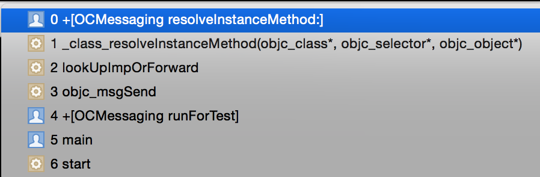

消息发送
- 对象方法的调用就是向该对象发送消息。
OCHelper *object = [[OCHelper alloc] init];
// 以下两句代码效果是相同的。
[object onHandler];
objc_msgSend(object, @selector(onHandler));
- 编译阶段，会自动将OC方法调用转化成内联的
objc_msgSend方法调用。
消息转发
- 有了OC的消息机制，就可以在运行时修改消息执行路径。
objc_msgSend会调用lookUpImpOrForward从类（或父类）的methodsCache或methodList寻找方法。lookUpImpOrForward的源码如下：
IMP lookUpImpOrForward(Class cls, SEL sel, id inst,
bool initialize, bool cache, bool resolver)
{
Class curClass;
IMP methodPC = nil;
Method meth;
bool triedResolver = NO;
methodListLock.assertUnlocked();
// Optimistic cache lookup
if (cache) {
methodPC = _cache_getImp(cls, sel);
if (methodPC) return methodPC;
}
// Check for freed class
if (cls == _class_getFreedObjectClass())
return (IMP) _freedHandler;
// Check for +initialize
if (initialize && !cls->isInitialized()) {
_class_initialize (_class_getNonMetaClass(cls, inst));
// If sel == initialize, _class_initialize will send +initialize and
// then the messenger will send +initialize again after this
// procedure finishes. Of course, if this is not being called
// from the messenger then it won't happen. 2778172
}
// The lock is held to make method-lookup + cache-fill atomic
// with respect to method addition. Otherwise, a category could
// be added but ignored indefinitely because the cache was re-filled
// with the old value after the cache flush on behalf of the category.
retry:
methodListLock.lock();
// Ignore GC selectors
if (ignoreSelector(sel)) {
methodPC = _cache_addIgnoredEntry(cls, sel);
goto done;
}
// Try this class's cache.
methodPC = _cache_getImp(cls, sel);
if (methodPC) goto done;
// Try this class's method lists.
meth = _class_getMethodNoSuper_nolock(cls, sel);
if (meth) {
log_and_fill_cache(cls, cls, meth, sel);
methodPC = method_getImplementation(meth);
goto done;
}
// Try superclass caches and method lists.
curClass = cls;
while ((curClass = curClass->superclass)) {
// Superclass cache.
meth = _cache_getMethod(curClass, sel, _objc_msgForward_impcache);
if (meth) {
if (meth != (Method)1) {
// Found the method in a superclass. Cache it in this class.
log_and_fill_cache(cls, curClass, meth, sel);
methodPC = method_getImplementation(meth);
goto done;
}
else {
// Found a forward:: entry in a superclass.
// Stop searching, but don't cache yet; call method
// resolver for this class first.
break;
}
}
// Superclass method list.
meth = _class_getMethodNoSuper_nolock(curClass, sel);
if (meth) {
log_and_fill_cache(cls, curClass, meth, sel);
methodPC = method_getImplementation(meth);
goto done;
}
}
// No implementation found. Try method resolver once.
if (resolver && !triedResolver) {
methodListLock.unlock();
_class_resolveMethod(cls, sel, inst);
triedResolver = YES;
goto retry;
}
// No implementation found, and method resolver didn't help.
// Use forwarding.
_cache_addForwardEntry(cls, sel);
methodPC = _objc_msgForward_impcache;
done:
methodListLock.unlock();
// paranoia: look for ignored selectors with non-ignored implementations
assert(!(ignoreSelector(sel) && methodPC != (IMP)&_objc_ignored_method));
return methodPC;
}
- 如果找到方法，则直接执行。
- 如果没有找到方法，则提供一套Hock机制，允许运行时解决。
NSObject提供了些可重载的方法，如下：
@interface NSObject
- (id)forwardingTargetForSelector:(SEL)aSelector;
- (void)forwardInvocation:(NSInvocation *)anInvocation;
- (NSMethodSignature *)methodSignatureForSelector:(SEL)aSelector;
+ (BOOL)resolveClassMethod:(SEL)sel;
+ (BOOL)resolveInstanceMethod:(SEL)sel;
@end
- 如果没有找到方法，会先调用
resolveInstanceMethod，在该方法中可动态添加方法到类。

- 如果不行，接下来会调用
forwardingTargetForSelector转发，可动态替换掉响应对象。 - 如果还不行，则调用
methodSignatureForSelector和forwardInvocation转发Invocation。 - 如果还不行，则会抛异常
doesNotRecognizeSelector。